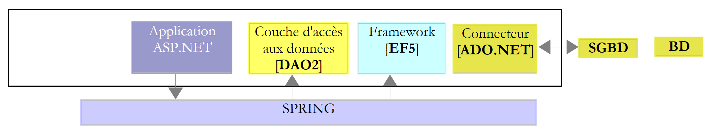
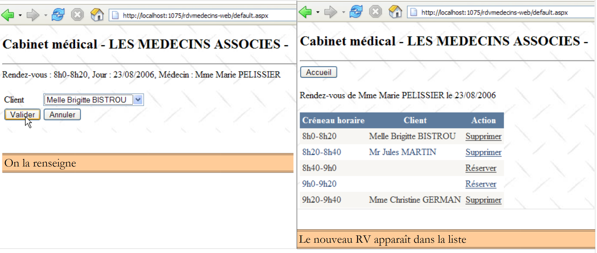
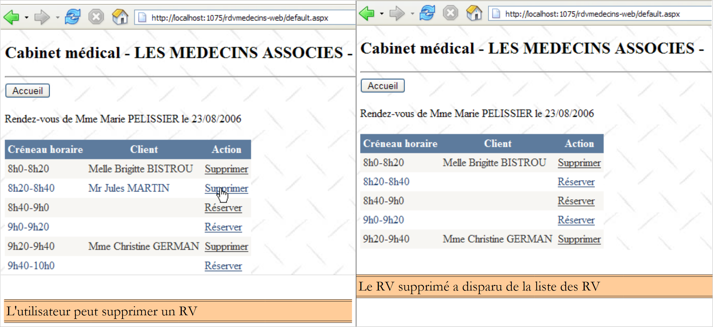

2. 案例研究
2.1. 问题
让我们回到我们要构建的应用程序。我们以一个具有以下架构的现有应用程序为起点：
 |
对于希望进一步了解以下内容的人士：
- NHibernate：ORM Nhibernate [http://tahe.developpez.com/dotnet/nhibernate/] 简介；
- 基于ASP.NET（WebForms）结合NHibernate和Spring的应用程序： 使用 ASP.NET、Spring.NET、NHibernate 和 [http://tahe.developpez.com/dotnet/pam-aspnet/] 构建三层 Web 应用程序。
我们希望将之前的应用程序转换为如下形式：
 |
其中 EF5 已替换 NHibernate。 该应用程序是研究 EF5 的一个契机。由于 Spring.NET 允许我们轻松更换层而不破坏现有结构，因此应用程序 2 将使用与应用程序 1 相同的 [ASP.NET] 层。 由于本文主要探讨EF5，我们将不详细说明该层的实现细节。我们将在应用2中引入它以验证其功能正常。我们仅说明在Spring.NET的配置文件中需要进行的修改。
案例研究如下。我们希望为医生提供一项基于以下原则运行的预约服务：
- 由秘书处负责为众多医生处理RV的预约事宜。该服务可由单人承担。其薪资由所有使用RV服务的医生共同分摊；
- 秘书处及所有医生均接入互联网；
- RV数据存储于中央数据库中，秘书处和医生均可通过互联网访问；
- RV的登记通常由秘书处负责。医生本人也可进行登记。特别是在诊疗结束时，医生亲自为患者开具新的RV的情况下。
RV开立服务的架构如下：
 |
如果医生们不再需要处理RV，他们的工作效率将得到提升。如果参与人数足够多，他们对秘书处运营费用的分摊将微乎其微。我们将该应用程序命名为[RdvMedecins]。以下是该应用程序运行时的屏幕截图。
该应用程序的首页如下：

从该首页开始，用户（秘书处、医生）将执行一系列操作。我们将在下文中进行说明。左侧视图展示了用户提交请求时的界面，右侧视图则展示了服务器发送的响应。
 |
 |
 |
 |
 |
2.2. 数据库
应用程序 NHibernate 使用的数据库是 MySQL5 数据库，其中包含四个表：

我们将以此作为参考来构建所有数据库。
2.2.1. 表 [MEDECINS]
该表包含由应用程序 [RdvMedecins] 管理的医生信息。
 |  |
- ID：医生标识号——该表的主键
- VERSION：表中该行的版本标识号。每次对该行进行修改时，该数字都会增加1。
- NOM：医生姓名
- PRENOM：其名字
- TITRE：其称谓（小姐、女士、先生）
2.2.2. 表 [CLIENTS]
各医生的患者信息存储在表 [CLIENTS] 中：
 |  |
- ID：客户标识号——该表的主键
- VERSION：标识表中该行版本的编号。每次对该行进行修改时，该数字会递增1。
- NOM：客户姓名
- PRENOM：客户名字
- TITRE：其称谓（小姐、女士、先生）
2.2.3. 表 [CRENEAUX]
该表列出了可进行 RV 操作的时间段：
 |
 |
- ID：时间段标识号——该表的主键
- VERSION：表中该行的版本标识号。每次对该行进行修改时，该数字会递增1。
- ID_MEDECIN：标识该时段所属医生的编号——MEDECINS(ID)列的外键。
- HDEBUT：时段开始时间
- MDEBUT：时段开始分钟
- HFIN：时段结束时间
- MFIN：时段结束分钟
例如，表 [CRENEAUX]（参见上文 [1]）的第二行显示，第 2 号时段于 8 点 20 分开始，8 点 40 分结束，并归属于第 1 号医生 （玛丽女士 PELISSIER）。
2.2.4. 表 [RV]
该表列出了每位医生所分配的RV时段：
 |
- ID：唯一标识RV的编号——主键
- JOUR：RV的日期
- ID_CRENEAU：RV的时间段——作为外键关联至QZXW2HTMLP000219ZX表中[ID]列——同时确定时间段和相关医生。
- ID_CLIENT：预订对象的客户编号——作为表[CLIENTS]中[ID]列的外键
该表的 对关联列（JOUR、ID_CRENEAU）的值施加了唯一性约束：
如果表[RV]中某行具有值 (JOUR1, ID_CRENEAU1) 作为列值（JOUR, ID_CRENEAU），则该值在其他任何地方都不能出现。 否则，这意味着同一时间针对同一位医生生成了两个 RV。从 Java 编程的角度来看，当这种情况发生时，数据库中的 JDBC 驱动程序会触发一个 SQLException。
id 行值为 7（参见上文的 [1]），表示在 2006 年 9 月 10 日，第 10 个时段和第 2 号客户被分配了一个 RV。 从表[CRENEAUX]中可知，第10号时段对应11:00-11:20，由第1号医生（Marie PELISSIER女士）负责。 表 [CLIENTS] 显示，客户编号 2 是克里斯汀·GERMAN 女士。
本案例研究曾作为Java文章[http://tahe.developpez.com/java/primefaces]的主题，其中使用了Java版的Hibernate（ORM）。